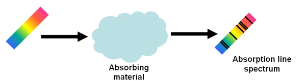
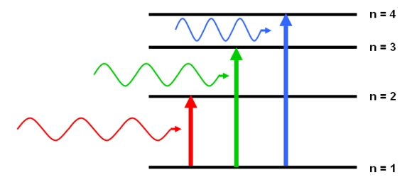

An absorption line will appear in a spectrum if an absorbing material is placed between a source and the observer. This material could be the outer layers of a star, a cloud of interstellar gas or a cloud of dust.

Incoming light (left) passes through a cloud of absorbing material, such as a cloud of interstellar gas. The light that leaves the cloud (right) shows absorption lines in the spectrum at discrete frequencies.
According to quantum mechanics, an atom, element or molecule can absorb photons with energies equal to the difference between two energy states.

Absorption lines are usually seen as dark lines, or lines of reduced intensity, on a continuous spectrum. This is seen in the spectra of stars, where gas (mostly hydrogen) in the outer layers of the star absorbs some of the light from the underlying thermal blackbody spectrum.

The spectrum of a G5IV star showing absorption line features below the level of the star’s blackbody continuum spectrum. Wavelength is measured in Angstroms, while the flux is in arbitrary units.
Dataset: VizieR catalogue III/219, Spectral Library of Galaxies, Clusters and Stars (Santos et al. 2002)
Dataset: VizieR catalogue III/219, Spectral Library of Galaxies, Clusters and Stars (Santos et al. 2002)
See also: spectral line.